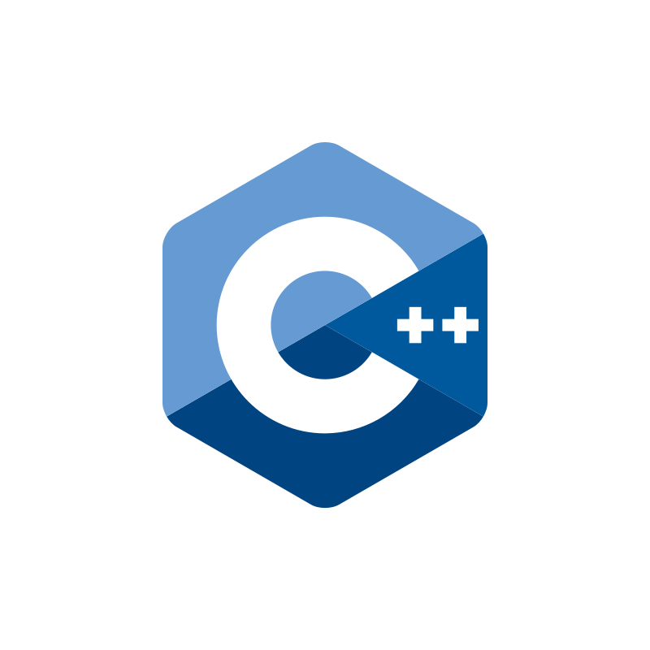

Anirudh Iyengar K N
Computer Vision Researcher | Machine Learning, NLP, and Data Enthusiast.
About
With a curious mind and a stubborn heart, I aspire to be a computer vision engineer and currently pursuing a Master's in Robotics and Autonomous Systems in Artificial Intelligence at Arizona State University.
My passion for computer science stems from a creative child who always loved tasks involving innovations and challenges. Driven by the same passion, I dedicated myself to the pursuit of excellence, earning an undergraduate degree in Computer Science and Engineering. I further pursued an internship at the Centre for Artificial Intelligence & Robotics Lab (DRDO) in Bangalore. As I delved deeper into AI and Robotics, I realized that my true calling lay not just in engineering the future but in sculpting it through the art of handling data. The revelation unfolded during a transformative collaboration with my mentor, Jimmy. My current area of interest and projects are A multitasking model capable of performing both detection and segmentation on medical images., as well as incorporating Capabilities for processing and understanding text and reports.
I envision myself to be a computer vision engineer, always eager to learn and create to positively impact the intersection of technology and life. My vision is to contribute to advancements that enhance our world and make it a better place. A peek into my life experiences..
Skills


C++
SQL


News
| Jul 31, 2023 | Joined Jliang Research Lab |
|---|---|
| Apr 28, 2023 | CHS Student Research Symposium |
Latest posts
| Mar 11, 2024 | ILSP Solutions |
|---|---|
| Jun 10, 2023 | OpenmmLab Tutorials |
| Jun 7, 2023 | Object Detection on Argoversehd Dataset - Exploring YOLOv8 Models |